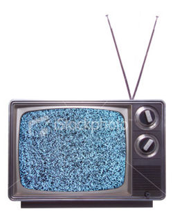

Novela
 De: La Frikipedia, la enciclopedia extremadamente seria.
De: La Frikipedia, la enciclopedia extremadamente seria.
Es una serie de primos, primos políticos terceros, amigos del novio de la hermana del amante del hijo del amigo...(y sigue) que lo único que hacen es meterse en la vida del vecino, mentirse, pegarse, besarse, mentirse y mentirse.
 La novela triste de las 8
Cosas que debe saber sobre las novelas
- Los personajes se mueren al menos 4 veces
- Todas las novelas cuentan la misma historia siempre pero con distintos clones
- Los mensajes subliminales pasan 10 veces más rápido
- Ver novelas te causa cáncer en los ojos
- Los teletubies son una novela mini
- Las novelas comenzaron como un anime europeo hasta que se dieron cuenta de que no tenían éxito
- Las peores novelas son las de venezuela
- amas de casa ignorantes se la pasan viendo novelas todo el dia , esperando a que el iguazo de su marido sea romantico con ella
- siempre hay un rico y un pobre
idiota , y el pobre termina (por alguna ley fisica de las novelas) con tada la riqueza del rico
- En una novela, todos se besan con todos y viceversa
- Si ves una novela de 1 hora por día todos los días, estarás desperdiciando 7 horas por semana, 30 horas por mes, 365 horas por año, 3650 horas por año, 36500 horas por decada y probablemente 2920000 horas en toda tu vida haciendo una tontería durante el tiempo que podrías usar haciendo cosas más valiosas como
ver novelas, leer libros, estudiar matemáticas y ayudar a la gente incendiar bibliotecas, tirar basura en el piso, no cruzar por el rayado, manejar en contramano, apoyar al calentamiento global, etc
- En una novela cuando un malo atrapa a un bueno la realidad se distorciona lo suficiente para que este último se salve
- Los personajes tienen nombres raros compuestos como Mario Alberto, Ricarda Roberta, MAria Guadalupe,...
- Para más información pregúntele a su abuelita
Tipos de novelas
Para Adololecentes
Este tipo siempre se trata de una adolecente estupida e inmadura uqe trata de tener sexo pasarla bien con sus amigos perfectos, esto siempre pasa en un colegio u escuela, donde todos se han cuadrado con todos y todas, algunos ejemplos:
yo que se preguntale a tu hermana...
Para ancianas
Tipico problemon, la niña pobre se enamora del rico, cuya historia siempre es asi:
-se conocen, se enamoran ,rompen se enamoran ....,tiene sexo , son infieles, se divorcian, se reecuentran, muere alguien, la pobre se vuelve millonaria y buenona, se casan FIN...
- Maria isabel
- maria guadalupe
- maria
- roxana
- te amo
- dejame amarte
- paquita gallego
- amor equino
- sin tu amor
- amorios
- me garche a tu hermana
- y a tu mama tambien...
- amar II
- Andrea ROSA melANO
- JUEGOS MACABROS
y otras 99999999999999999999999*10 novelas que no me voy a partir el culo escribiendolas, si sabes escribe otra...
Véase también
 Literatura Literatura
|
|
|
Autor(es):
- Krusher
- Roms
- Khazike Khashondo
- Azulejos
- LucX
- Kekos
- -MaRiO-
- Carlsen
- Cibercrank
- Veni Vidi Vici
Frikipedia 2005-2016, Licencia
GFDL 1.2 - Extraído por FrikiLeaks